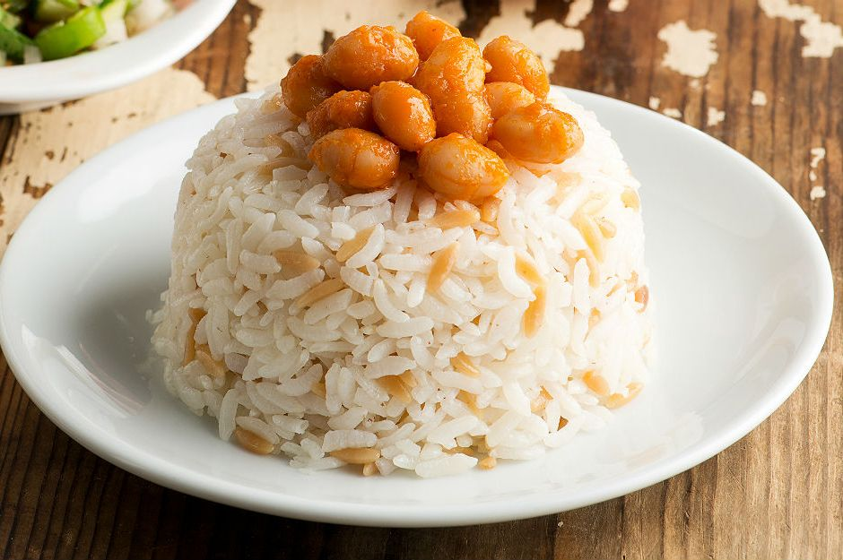

Het gerecht waarover ik hier ga schrijven is pilav.
Over de spelling (is het nu pilav of pilaf?) en de herkomst van dit gerecht worden we het niet eens (de één zegt Bulgarije, de ander Turkije
Gelukkig is dat niet belangrijk, wat wel belangrijk is, is dat het erg lekker smaakt.
Sommige mensen doen er kikkererwten of dadels bij, wij houden het hier gewoon basic.
Het word niet altijd met dezelfde rijst gemaakt, dat maakt het zo leuk elk gerecht smaakt anders
Suc6 met het maken van deze overheelijke pilav
